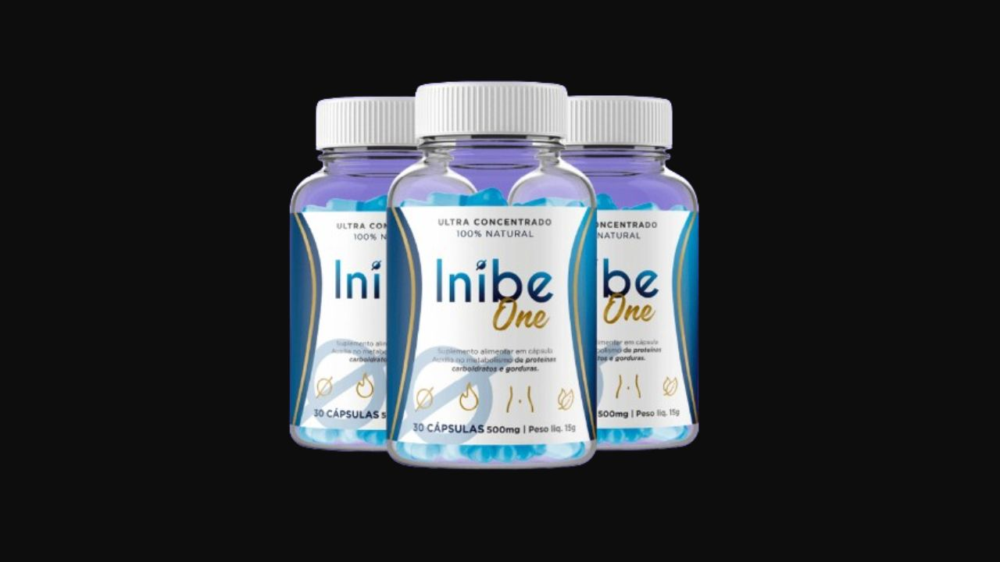

Analisamos os 8 ingredientes naturais, os efeitos esperados e para quem realmente vale a pena. Sem promessas exageradas.

Inibe One é um inibidor de apetite natural em cápsulas com 8 ingredientes focados em saciedade, regulação intestinal e metabolismo. Mais de 94 mil pessoas atendidas. Garantia de 30 dias.
Até 30% de desconto · Frete grátis · Garantia de 30 dias
→ Acessar Site OficialInibe One é um suplemento alimentar em cápsulas desenvolvido como inibidor natural de apetite. A fórmula combina 8 ingredientes ricos em fibras e nutrientes que atuam em conjunto para prolongar a saciedade, regular o intestino, reduzir a absorção de gorduras e acelerar o metabolismo.
O produto é fabricado pela Capsul Brasil Ltda em Minas Gerais — o que garante rastreabilidade e controle de qualidade nacional. Mais de 94 mil pessoas passaram pelo programa desde o lançamento.
O diferencial do Inibe One está na combinação de fibras inteligentes — Psyllium, Inulina, FOS e Ágar-Ágar — que trabalham juntas para criar uma sensação de saciedade real e prolongada, regulando o intestino e reduzindo a absorção de açúcares e gorduras ao mesmo tempo.
Microalga rica em proteínas, vitaminas e minerais. Aumenta a saciedade pela alta concentração de nutrientes — o corpo sente que está bem nutrido e reduz a compulsão por comida impulsiva.
Fibra solúvel que forma um gel no estômago ao entrar em contato com água, criando saciedade real antes das refeições. Um dos ingredientes com mais evidência científica para controle do apetite.
Mineral que melhora a sensibilidade à insulina e estabiliza a glicemia. Reduz a compulsão por doces e carboidratos — especialmente importante para mulheres com ansiedade alimentar.
Fibras prebióticas que alimentam as bactérias benéficas do intestino. Melhoram a saúde digestiva, combatem o inchaço e regulam o trânsito intestinal — fundamental para o metabolismo funcionar corretamente.
Rica em fibras, ômega-3 e proteínas. Prolonga a saciedade, fornece nutrientes essenciais e apoia o metabolismo. Combina com o Psyllium para potencializar o efeito de saciedade.
Fibra derivada de crustáceos que se liga às gorduras no trato digestivo, reduzindo a absorção de gordura da alimentação. Atenção: contraindicado para alérgicos a frutos do mar.
Fibra de algas marinhas que forma gel no estômago, aumentando a sensação de cheio. Complementa o Psyllium para criar uma barreira natural contra a fome antes das refeições.
Ingredientes que reduzem a fome e a vontade de comer de forma impulsiva
Queima calorias mais rapidamente mesmo em repouso
Fibras inteligentes que fazem o intestino trabalhar corretamente
Reduz gordura abdominal queimando gordura localizada
Inibe One contém Quitosana derivada de crustáceos. Pessoas com alergia a camarão, caranguejo ou outros frutos do mar devem verificar com médico antes de usar. Para as demais, o produto é seguro e natural.
Inibe One é um suplemento honesto com composição bem estruturada para o objetivo proposto. A combinação de fibras inteligentes — Psyllium, FOS, Inulina, Ágar-Ágar e Chia — cria um ambiente real de saciedade e regulação intestinal que dificulta o excesso alimentar sem estimulantes fortes.
Para mulheres que comem por ansiedade ou compulsão e querem um suporte natural sem depender de remédios — a fórmula tem base para funcionar.
O ponto mais forte é a transparência — CNPJ verificável, endereço físico, fabricação brasileira. Isso é o tipo de seriedade que separa um produto legítimo de um produto duvidoso no mercado de suplementos.
Até 30% de desconto · Frete grátis · Garantia de 30 dias
→ Acessar Site Oficial